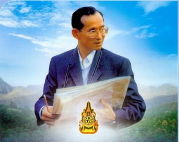

ประเทศไทยได้เปลี่ยนแปลงการปกครองจากระบอบสมบูรณาญาสิทธิราชย์ มาเป็นระบอบประชาธิปไตย หรือระบอบ ปรมิตตาญาสิทธิราชย์ มีกฎหมายสูงสุด คือรัฐธรรมนูญ โดยมีพระมหากษัตริย์เป็นองค์พระประมุขของประเทศ เมื่อวันที่ 24 มิถุนายน 2475

ประมุขของประเทศไทย
แต่ตลอดระยะเวลาที่ผ่านมา ประเทศไทยยังเป็นประชาธิปไตยที่ไม่เป็นไปตามหลักการ มีการปฏิวัติรัฐประหารยึด อำนาจ ตั้งคณะรัฐบาลและกำหนดบทบัญญัติขึ้นเอง ประชาชนไม่มีสิทธิเสรีภาพดังที่ควรจะเป็น ดังนั้น จึงเกิดเหตุการณ์ ใหญ่ขึ้นถึง 3 ครั้ง คือ
ในวันที่ 14 ตุลาคม 2516 มีกลุ่มเรียกร้องประชาธิปไตยและต่อต้านอำนาจเผด็จการ อันประกอบไปด้วยประชาชน จากทุกสาขาอาชีพ ภายใต้การนำของนิสิต นักศึกษาจากทุกสถาบัน เป็นเหตุการณ์ที่บันทึกไว้ในประวัติศาสตร์การเมืองการ ปกครองของไทย เพื่อให้เยาวชนรุ่นหลังได้รับรู้ เกิดความหวงแหนและร่วมกันธำรงไว้ซึ่งการปกครองในระบอบ ประชาธิปไตยที่ต้องแลกมาด้วยชีวิต และความยากลำบากของเพื่อนร่วมชาติ
เหตุการณ์ครั้งที่สอง เกิดขึ้นในวันที่ 6 ตุลาคม 2519 ได้มีนิสิตนักศึกษาและประชาชนร่วมกันปกป้องประชาธิปไตย ต่อต้านการกลับมาของกลุ่มอำนาจเก่า ทำให้ประเทศไทยต้องสูญเสียทรัพยากรบุคคลอันมีค่ายิ่งไปเป็นจำนวนมาก
และครั้งล่าสุดเกิดขึ้นวันที่ 17 พฤษภาคม 2535 มีกลุ่มต่อต้านอำนาจเผด็จการและเรียกร้องประชาธิปไตยขึ้นอีก ผลจากการเรียกร้องในครั้งนี้ นำไปสู่การแก้ไขกฎหมายรัฐธรรมนูญ ซึ่งต่อมาได้มีการประกาศใช้รัฐธรรมนูญ ฉบับปัจจุบัน คือ รัฐธรรมนูญแห่งราชอาณาจักรไทย พุทธศักราช 2540
สถาบันต่าง ๆ ที่เกี่ยวข้องกับการปกครองประเทศ มีดังนี้
1. ฝ่ายบริหาร คือ คณะรัฐมนตรีหรือรัฐบาล
2. ฝ่ายนิติบัญญัติ คือ รัฐสภา ประกอบด้วยสมาชิก 2 ส่วน คือ สมาชิกสภาผู้แทนราษฎร (ส.ส.) ซึ่งประชาชนเลือกตั้งเข้ามาทั้งหมด และวุฒิสมาชิก ซึ่งได้รับการแต่งตั้งจากพระมหากษัตริย์ตามการเสนอ ขึ้นโปรดเกล้าฯ ของนายกรัฐมนตรี
3. ฝ่ายตุลาการ คือ ศาล มีหน้าที่พิจารณาคดีต่าง ๆ ให้เป็นไปตามบัญญัติของกฏหมาย เพื่อให้เกิดความ ยุติธรรมแก่ประชาชน ทั้งนี้ในรัฐธรรมนูญมีบทบัญญัติให้ศาลเป็นสถาบันอิสระจากรัฐสภาและรัฐบาล มีคณะกรรมการตุลาการ (ก.ต.) ทำหน้าที่ควบคุมการแต่งตั้งข้าราชการตุลาการ เพื่อให้ศาลเป็นสถาบันที่ ธำรงไว้ซึ่งความบริสุทธิ์ยุติธรรมอย่างแท้จริ